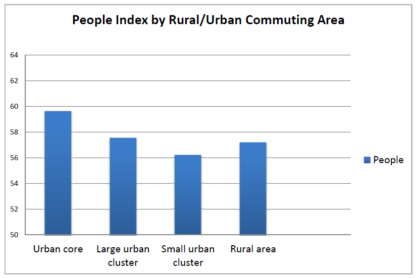
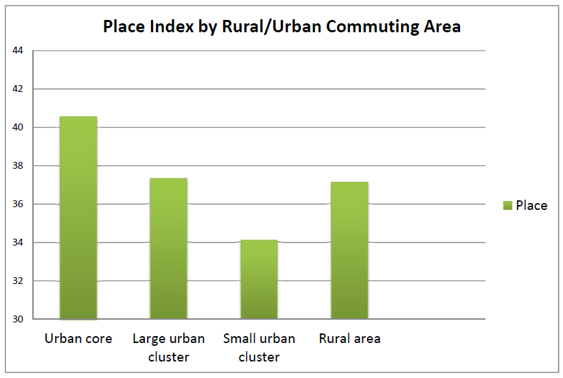
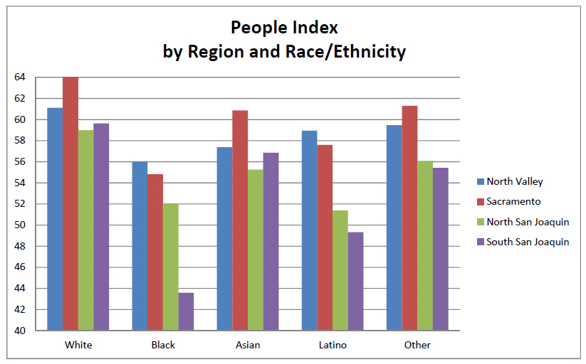
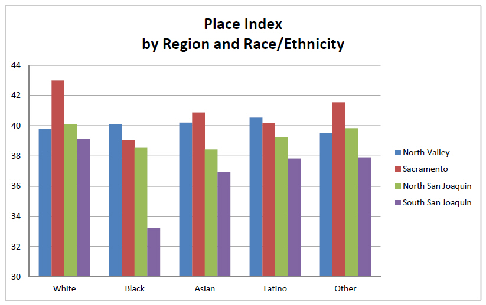
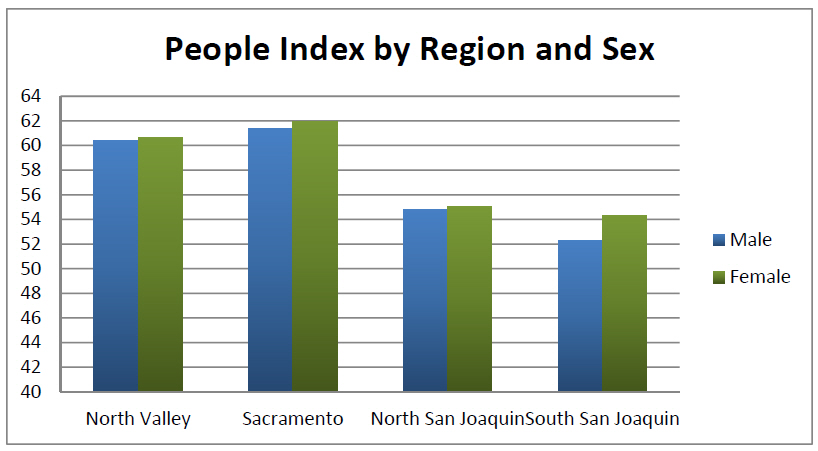
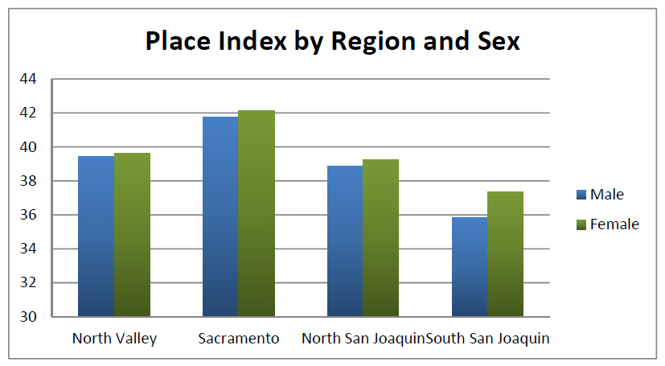
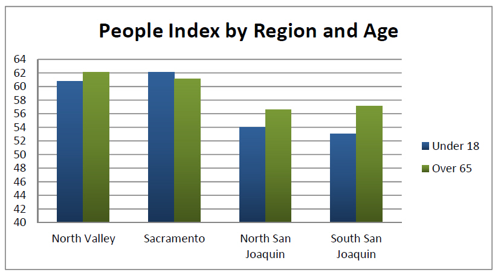
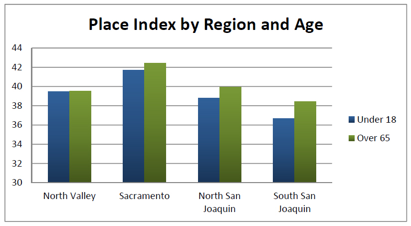

Patterns of Rural Opportunity: Spatial, Racial, Age, and Gender Disparities
The Rural Opportunity Index (ROI) is designed to provide an easy and intuitive tool for identifying populations and areas in greatest need of investment to thrive. The ROI integrate key indicators across a range of important issues—including education, economy, housing, mobility and the environment, and civic life—into a comprehensive measure of opportunity. We have developed separate ROI indices for both people and place, helping to identify factors associated with the demographic characteristics of people, and factors associated with places in which they live. In examining these patters across the entire Central Valley region, some interesting overall patterns of disparity in opportunity emerge.
Rural-Urban Dynamics1:
Overall, for both people and place, urban core areas of the valley have the highest levels of opportunity. This is perhaps not surprising for the Sacramento area, but even major cities of the San Joaquin Valley, such as Fresno and Bakersfield, which has major concentrations of poor populations, still have higher opportunities relative to the smaller towns and cities of the Central Valley. The lowest levels of opportunity, as measured by our indices, are in those small towns of the Central Valley with populations of less than 10,000 people, but larger than 2,500. Interestingly, the truly rural parts of the region—those places with no settlement larger than 2,500 and only small amounts of commuting to small towns or larger urban center—have higher levels of opportunity than those small towns of the Valley. Our interpretation of this is that a higher proportion of people living in those fully rural places have moved there for lifestyle purposes or retirement, and fewer are dependent on the agriculture or natural resource based jobs that typically provide low wages and worse economic circumstances.


Racial Disparities vary by sub-region
In trying to understand disparities in opportunity by different racial groups, we decided to look at how patterns differ in sub-regions of our overall analysis area. The North Valley refers to all counties north of Yuba and Sutter counties. The Sacramento area refers to the 6 counties covered by the Sacramento Area Council of Governments (El Dorado, Sacramento, Placer, Sutter, Yolo, Yuba). The North San Joaquin Valley includes all counties south of Sacramento but north of Fresno, and South San Joaquin Valley includes Fresno County and those counties further south.
In looking at the Index of People Opportunity, it is clear that across all racial groups, opportunity levels are significantly lower in the San Joaquin Valley (both North and South) than in Sacramento and the North Valley. It is also clear that in all regions the non-Hispanic White population has higher levels of opportunity than any other racial group. The African-American population has the lowest opportunity level in all sub-regions except the northern San Joaquin Valley, were the Latino population has a slightly lower opportunity score. African-Americans have a particularly low opportunity score in the South San Joaquin Valley. For the non-Hispanic White and Asian population, those living in the Sacramento sub-region have the highest opportunity scores. Interestingly, amongst African-Americans and Latinos, those living in the North Valley actually have higher opportunity scores than those living in Sacramento.

Looking at the Place Opportunity Index provides some clues to help explain these racial differences in the People Opportunity Index. Here, the indices can be interpreted as the average opportunity score of the places where people of each racial group live. The patterns track quite closely to the patterns of the measures of the people themselves, indicating close overall connection between the relative opportunities a neighborhood provides and the relative opportunity people are able to achieve. It suggests, for example, that at least one reason why African-Americans and Latinos living in the North Valley are doing somewhat better than those living in the Sacramento region is because the particular neighborhoods they are living in in the North Valley have relatively more opportunities than those neighborhoods in Sacramento where they live, which include more areas of concentrated poverty. Overall, though, the patterns are quite similar, as across all groups, the residential places they live in the San Joaquin Valley (both northern and southern) have substantially less opportunity than those neighborhoods in Sacramento, and in most cases less than in the North Valley as well.

Disparities by gender and age are less
While the opportunities indices show quite large differences in the opportunities available by different racial groups, and analysis of disparities by gender and age show substantially less variation. There is still a quite clear pattern of less opportunities in the San Joaquin Valley, and particularly in South San Joaquin Valley. The differences between men and women, however, are generally quite minimal. The one exception to this, however, is in the very southern San Joaquin Valley, where men have what appear to be substantially lower levels of opportunity, and are living in places with substantially lower opportunities as well. This is likely due to the disproportionately higher employment of men as farmworkers in the region’s agriculture and food processing industries.


It is also valuable to look at opportunities for youth, and for elderly populations, since they tend to be the most vulnerable populations. Again, there are similar patterns across sub-regions, with those people and places in the San Joaquin Valley having substantially less opportunities than those in Sacramento in particular. For the over 65 population, those living in the North Valley have the highest levels of opportunity, despite the place index being lower. This would make sense if people have retired to this area, having achieved their higher levels of opportunity elsewhere and are thus less hurt by the lower opportunities available in their local areas. For young people, levels of opportunity in the South San Joaquin Valley are particularly low and worrisome, suggesting a significant need for investing in opportunities for youth in this sub-region of the state.


1 The ROI covers 19 counties in Central California. While overall this area is typically considered the rural hinterland of California, compared to the more densely populated areas of Coastal Northern and Southern California, it does include a range of settlements, from large urban centers like Sacramento and Fresno, to smaller cities, to truly rural areas. To examine the differences in opportunity by levels of urbanization, we use the Rural-Urban Commuting Area (RUCA) Codes developed by the U.S. Department of Agriculture’s Economic Research Services, to classify all census tracts into one of four different categories: